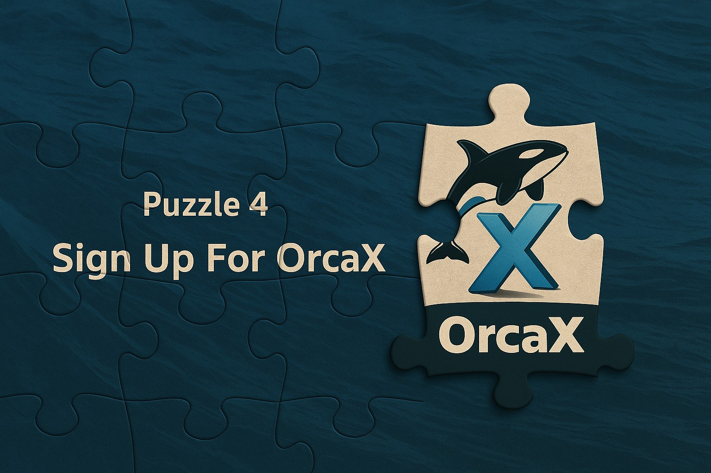
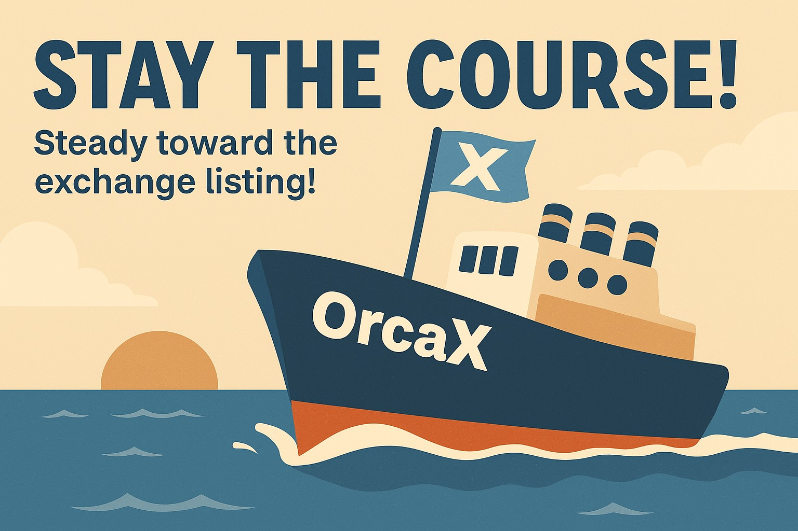

X는 미지의 가능성, 선택은 당신의 몫.
모든 항해에는 지도에 없는 미지의 장소가 있습니다. 그곳에는 'X'가 표시되어 있습니다.
고대의 보물지도가 그랬듯, OrcaX의 ‘X’는 단순한 기호가 아닌, 무한한 가능성과 선택의 갈림길을 뜻합니다.
‘X’는 물리적인 방향이 아닙니다. ‘X’는 당신이 원하는 미래로 향하는 가장 개인적이며 자유로운 좌표입니다.

